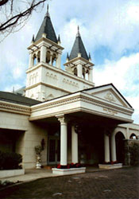
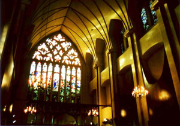

最近、都心や郊外に奇妙な教会風の建築を見かけることが多くなった。それも知らないうちに、街中や幹線道路沿いなどに建てられて、居心地悪そうに周辺から孤立し、あるいは雑駁な風景に紛れ込むように存在している。おそらく、そのような建物を見た人も多いのではないだろうか。あるいは、結婚式に招かれて、その中に入ったことがある人も多いのではないかと思う。かつてはホテルのフロア内に礼拝堂がビルトインされ、外からは見えなかったものが、独立した構築物としてつくられるようになり、あからさまに見えるようになったのだ。
この建物の大半は結婚式場を抱える挙式のためだけに存在する教会であり、新しく登場したビルディングタイプだと考えられる。大体においてヨーロッパの大聖堂に使われるゴシック様式や、ギリシアに由来する古典主義を引用している。だが、本場の教会とは違い、これらは毎週通う地元の信者というものが存在しない。そこで、この「信者なき教会」建築を、われわれは「結婚式教会」と命名した。なお、業界では、ウェディング・チャペルという呼び方をしている。
名古屋の事例を幾つか挙げよう。
まずは日本で二番目に誕生した互助会、名古屋冠婚葬祭互助会により設立された専属の結婚式場「マリエール（平安閣）」から。東海圏で最大規模の業績を誇り、結婚式教会も大がかりで、挙式を演出するために、敷地内そのものをヨーロッパの街をモチーフにして、さながらテーマパークのような空間をしつらえる。例えば、マリエール岡崎は南フランスのエズ村をモチーフにして、全体をロマネスク調に仕上げる、といった具合だ。また愛知冠婚葬祭互助会を前進にもつ「高砂殿」グループでは、白を基調とした教会建築を雛形として規格化し、岡崎市をはじめとして数件建設されている。他にも、パルコ屋上にあるガーデンチャペルや、名古屋市の中心から少し外れた下町にいきなり挿入されたセント・ジョージ教会などのように、都心の狭い敷地内に展開している建物も少なくない。
|  |
 |
マリエール小牧 |
サンクチュアリ マリエール山手 内観 |
ファッションとしての結婚式
そもそも結婚式教会はいつごろから建てられ始めたのだろうか。
これに関しては、幾つかの契機が指摘しうるだろう。ひとつめは、1972年の西郷輝彦と辺見マリの挙式である。軽井沢カトリック教会(1935)で行われたこの挙式はテレビでも放映され、また『朝日新聞100年の記事に見る 恋愛と結婚』（朝日新聞社、1979年）によれば、式後に当教会に問い合わせが殺到した様子が紹介されており、そこからも当時に与えた影響力の大きさを推し量ることができる。実際、翌年から同教会に約500件もの申し込みがあったという。言うまでもなく、キリスト教に共感したからではないだろう。多くの人が、憧れのタレントと同じ場所で、同じ方法で結婚式を挙げたいと考えたのである。しかし、このエピソードは、現在の結婚式教会をつくるまでにはいたらなかった。そもそも軽井沢カトリック教会は、モダニズムの建築家A.レーモンドが設計した建築であり、結婚式のためにつくられたものではない。信者がいる、本物の教会だ。
結婚式教会建設の直接の原因と思われるのが、1981年のチャールズ皇太子と故ダイアナ妃の結婚式だろう。先日、ブライダル業界の関係者にインタビューをしたところ、やはりこれはウェディング・ドレスの需要という観点から、重要なきっかけになったらしい。このときも印象的な映像が流されたが、教会の空間も大きな役割を果たしている。したがって、このウェディング・ドレスを着て挙げる結婚式の延長線上に、舞台装置としての教会が着目されたと考えられる。
実際、現在確認できる結婚式教会のほとんどが、1990年代以降に建設されている。また、挙式の統計をとったデータを調べると、それまでの主流だった神前式が1990年代付近を境に激減し、代わりにウェディングチャペル式が大きくシェアを占めていく状況が確認できる。こうした背景として、チャールズ皇太子とダイアナ妃による、イギリスのロイヤル・ウエディングの影響を指摘できるだろう。また、結婚式教会がウェディング・ドレスの延長線上に位置するという見解は、流行によってファッション感覚で流動する業界の様子そのものをよく示している。
演出される空間
こうした動きに関連して、近年、ウェディング・デザイナーという職種が認識され始めたのも興味深い。2001年に劇場公開されたジェニファー・ロペス主演の映画「ウェディング・プランナー」を皮切りに、日本でも結婚式をデザインする仕事が注目されはじめた。さらに、翌年の飯島直子主演のドラマ「ウェディング・プランナー」(2002)がその流れを加速させ、女性からおしゃれで素敵な仕事として人気を獲得していく。現在のウェディング・プランナーの傾向としては、マリエールなどのような企業に属する人と、個人で結婚式を計画・プロデュースする人に二分される。仕事の内容的には大差はないが、後者のほうがよりフレキシブルに顧客の要望に対処できる反面、マリエールのように自社以外の介入を一切受け入れない企業もある。特に最近では、個性的な結婚式を求めるカップルの増加と、それに伴うハウス・ウェディングや、パーク・ウェディングの需要により、ウェディング・プランナーの仕事も多様化しているようだ。なお、ハウス・ウェディングの施設は、洋風の邸宅を舞台としている。またパーク・ウェディングとは、敷地内に設けられた内庭を中心として行われるパーティがメインとなる結婚式の形式を指す。
結婚式の演出をトータルに行うならば、必然的に舞台としての空間や建築にも目が向けられるだろう。流行を先取りする結婚情報誌の充実と企業の連動、さらには結婚式をデザインし、様々なプロセスと顧客との間を取り持つプロフェッショナルが登場したことが、業界自体のフットワークの軽さにつながっている。それは、より新しいものを求める声に拍車をかける形になり、まさにファッション的な業界構造を示しているように思える。ウェディング・プランナーと個性的な結婚式への要望は、この先、結婚式業界を揺さぶり、ひいてはウェディング・チャペルの未来を左右するだろう。
名古屋と結婚式
全国的に名古屋の結婚式は豪華だという通説があるが、話を東海圏に向けてみると、名古屋の東に位置する豊田市近郊では、現在、多数の結婚式場が建設されているという。しかし、その中心となるタイプはウェディング・チャペルではなく、パーク・ウェディングによるものが多い。また、結婚情報誌『ゼクシィ』により紹介された「新和装」という着物のデザインから、神前式も再注目されている。これらは全体のパーセンテージからすると、まだまだウェディング・チャペル形式を脅かす程の比を占めているとはいえないが、業界の視野がそちらの方向を見据えているようだ。
ビルディングタイプとしては未熟な結婚式教会は、いずれ神前式婚のように、ある日を境にぱったりと姿を消してしまうのだろうか。見学させていただいた結婚式教会の案内役の女性が、まだ建設されて三年足らずの建物を「常に新しいものが欲せられているので、古いものは集客が悪くなっていく」と言っていたのが印象に残る。永遠性を志向し、数百年、ときには千年以上も残るヨーロッパの教会に比べると、日本の結婚式教会がいかに使い捨ての施設なのかがうかがえるだろう。
その反面、このような流動的なデザインを追いかける建物に、数百万単位の金をつぎ込む日本人の建築観を見過ごすわけには行かない。おそらく一般の人々が住宅購入以外で、これだけの額を建築に（勿論披露宴やドレス代も入るのだが）つぎ込む機会はない。そして、その対象となる建物は、お世辞にも良い建築であるといえない事に利用する人々がほとんど知覚出来ないでいる。こうした現状は、われわれ建築に携わる側が看過してはいけない事象を含んでいると思う。
最後に、小川一水の『第六大陸』（ハヤカワ文庫、2003年）というSF小説を紹介したい。これは民間の建設業者が月面に開発計画を行うという設定で、技術的な面でも資金的な面でも、可能な限り、リアルなシミュレーションを試みたものである。章立ても「１ 事前調査および起案 2025年」、「２ 資機材搬入および造成 2029年〜2033年」という風に、企画の段階から描く。そして検討の結果、月につくるのは基地ではなく、結婚式場に決定される。理由はこうだ。「結婚式だったら、お金がかかっても人が来てくれるからです」。「世界のどこにでも、若い二人の門出を祝おうとする御両親はたくさんいます。ひとり二億円で、催行はカップル二組から。四億円で二泊三日の結婚式兼新婚旅行ー本物のハネムーンができるってなったら、お客さんは必ず来ます」。海外挙式ならぬ、宇宙挙式。本物のハネムーンというのが笑えるが、なるほど、意表を突くリアリティがある。そして小説では、月面に聖堂が建設される。宇宙の結婚式教会なのだ。ちなみに、御鳥羽総合建設が組み、そのソフトを手がけるエデン・レジャーエンターテイメント社というのが、名古屋の企業だという設定も興味深い。
 |
小川一水『第六大陸』 |
|